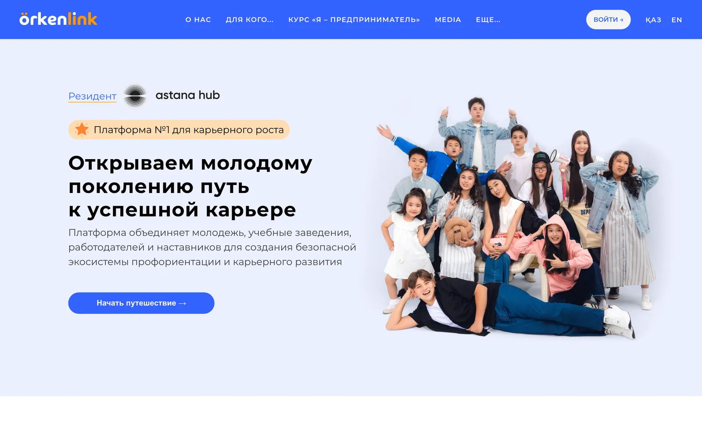
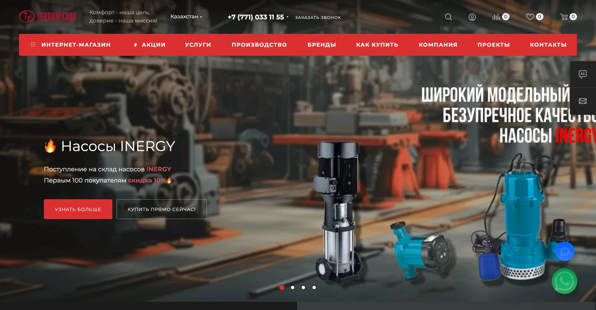

01 / 06Платформа
 Örkenlink
ÖrkenlinkКарьерная платформа для студентов и работодателей
Управляет внешним кадровым пулом, помогает студентам находить возможности и соединяет кандидатов с компаниями.
Открыть проект
Проекты · Silk Road Tech
Собираем цифровые продукты вокруг реальных процессов — от карьерных платформ и инженерных расчётов до AI-автоматизации и промышленного каталога.
Каждый проект начинается с вопроса: что должно стать проще после запуска?
Выбираем задачу, а не модный стек
Ниже — проекты, в которых технология стала частью ежедневной работы команды.
ÖrkenlinkУправляет внешним кадровым пулом, помогает студентам находить возможности и соединяет кандидатов с компаниями.
Открыть проект
Инженер задаёт параметры объекта — платформа подбирает насосы и теплообменники и формирует готовый пакет документов.
Открыть проект
 +30%конверсия
+30%конверсияБоты на всех этапах воронки, мониторинг эффективности операторов и отчётность.
 0,4—500 кВполный цикл
0,4—500 кВполный циклЦифровое представление полного цикла производства подстанций и распределительных устройств.
Открыть проектГенерирует посты из текста или голоса, обучается фирменному стилю и помогает с автопубликацией.
Открыть проект 1000+позиций
1000+позицийВеб-платформа для поставщика гидравлических и пневматических компонентов в горнодобывающем секторе.
Открыть проект